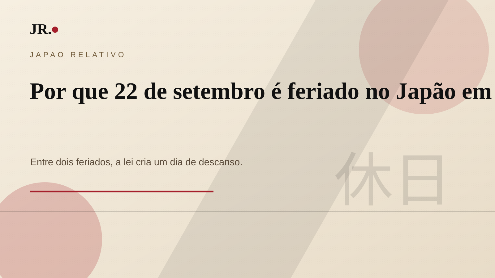

Em 2026, a terça-feira 22 de setembro é dia de descanso no Japão, embora não tenha uma comemoração própria. Ela fica entre dois feriados nacionais: 21 de setembro, 敬老の日, Keiro no Hi, e 23 de setembro, 秋分の日, Shubun no Hi.

A regra legal
O parágrafo 3 do artigo 3 da Lei dos Feriados Nacionais determina que um dia que não seja feriado nacional se torna dia de descanso quando o dia anterior e o dia seguinte são feriados nacionais. É o mecanismo frequentemente associado à expressão 国民の休日, kokumin no kyujitsu.
Não é feriado substitutivo
O feriado substitutivo ocorre quando um feriado nacional cai no domingo. Em 22 de setembro de 2026, o motivo é outro: o dia está imprensado entre dois feriados nacionais.
Como falar da data
O calendário oficial registra o dia 22 como 休日, kyujitsu, dia de descanso. Ele não deve ser tratado como um terceiro feriado comemorativo independente.
O que observar na prática
Empresas, escolas, clínicas, repartições, transportes e atrações podem funcionar de formas diferentes. O melhor caminho é confirmar horários locais, especialmente durante a chamada Silver Week.